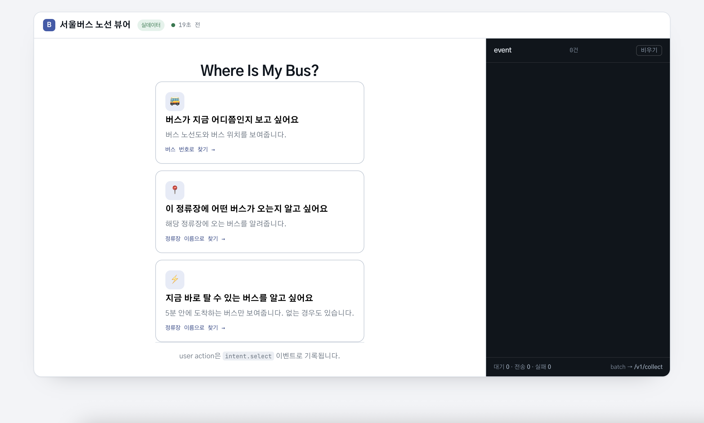
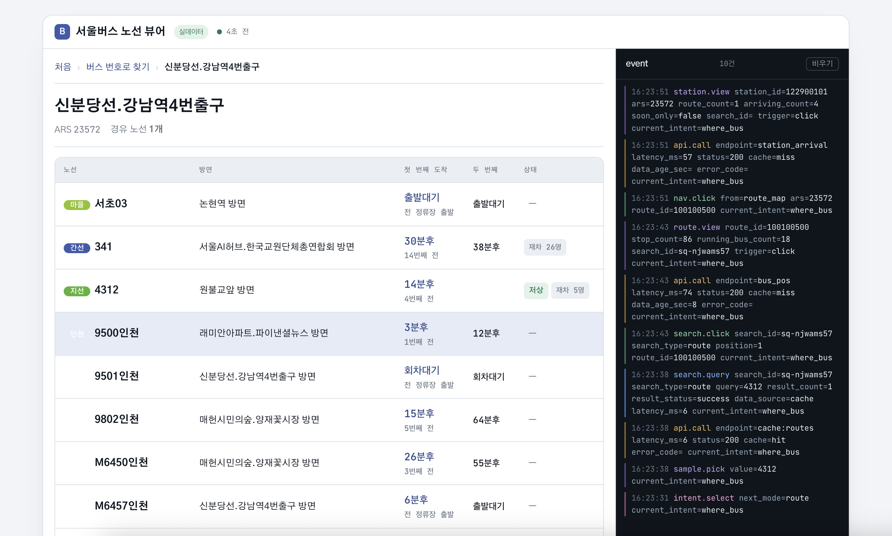
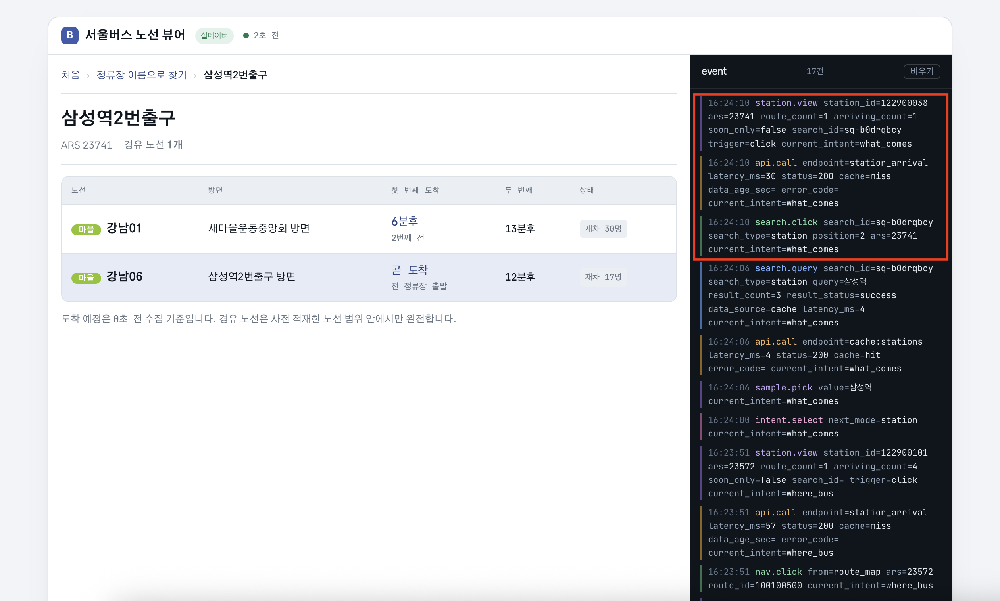
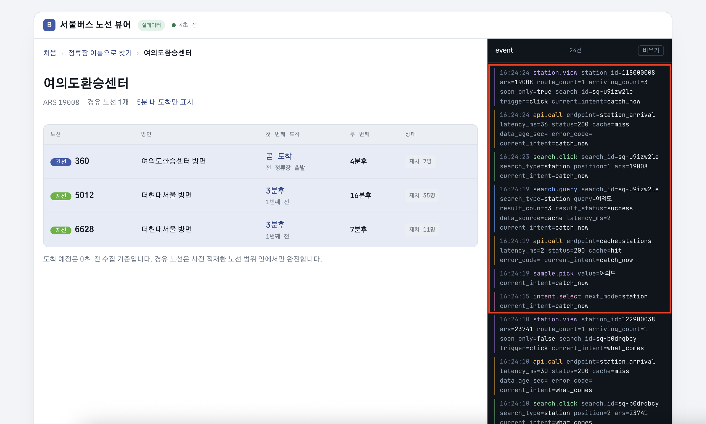

01문제와 제약
설계를 먼저 결정한 것은 기능이 아니라 제약이었습니다.
외부 API 하루 1,000회
모든 조회를 외부 API에 의존하면 한도를 빠르게 소모합니다. 따라서 정적 마스터와 동적 운행정보를 분리했습니다.
Browser 이벤트 유실
탭 종료·네트워크 오류·클라이언트 시계 오차를 완전히 없앨 수는 없습니다. 대신 유실 징후와 알려진 client-side drop을 관찰할 수 있게 했습니다.
Pipeline 에러 없는 고장
수집이 멈춰도 애플리케이션 오류가 발생하지 않을 수 있습니다. 그래서 랜딩과 분석 계층을 따로 점검합니다.
수집 API는 검증과 raw 랜딩만 담당하는 얇은 계층으로 유지하고, 정제·집계는 다시 실행할 수 있는 별도 배치로 분리했습니다.
02실행 데모
서버와 인증키 없이 동작하는 데모입니다. 화면에서 발생한 이벤트와 로그 구조를 확인할 수 있습니다.
노선·정류장 순서는 실제 서울시 API에서 확인한 값을 고정하고, 버스 위치와 도착 시각은 과거 값을 현재 정보처럼 보이지 않도록 합성합니다.
실제 수집 서버로 전송되는 흐름은 아래 이벤트 여정에서 설명합니다. 서버 없이 동작하므로 로그는 화면에 표시만 합니다.
실행 화면

이 선택이 intent.select 로 남고, 이후 모든 이벤트에 current_intent 가 따라붙습니다.

search_id=sq-njwams57 하나가 search.query → search.click → route.view 를 묶습니다.
같은 화면의 api.call 두 건이 캐시 적중(cache=hit · 6ms)과 외부 호출(cache=miss · 74ms)을 나눠 남깁니다.

클릭 이벤트가 ars=23741 과 position=2 를 함께 남깁니다.
같은 이름의 정류장도 방향에 따라 서로 다른 ARS를 가지기 때문에, 정류장 이름만으로는 어느 정류장을 선택했는지 알 수 없습니다.

로그 아래쪽은 current_intent=what_comes, 위쪽은 catch_now 입니다.
같은 세션인데 목적이 바뀌었고 soon_only 도 false → true 로 따라 바뀌었습니다.
노선 검색
search.query와 search.click이 검색 단위를 기준으로 연결됩니다.
정류장 조회
정류장 이름만이 아니라 ars를 식별자로 남겨 방향별 정류장을 구분합니다.
캐시 관측
api.call에 cache·latency·status를 남겨 외부 호출과 캐시 응답을 구분합니다.
03로그 설계
3.1 이벤트 계층
한 레코드를 envelope · context · properties · server enrichment로 나눴습니다. 서버가 책임지는 값을 클라이언트 payload가 덮어쓰지 못하게 했습니다.
event_id·session_id·seq가 깨지면 dedup과 유실 징후 분석까지 함께 흔들립니다. 이 규칙은 브라우저 SDK self-check에 포함해 변경 시에도 유지되는지 검증합니다.event_id UUIDv4 · 후속 적재의 멱등 키 event_name 허용 이벤트 목록 event_ts 발생 시각(클라이언트 시계) session_id 30분 inactivity 단위 seq 세션 내 순번 entry_intent 첫 목적 current_intent 현재 목적 event_type 서버가 event_name에서 판정 ingest_ts 서버 수신 시각 queue_delay_ms 큐 대기 ingest_delay_ms 전송·수용 구간
3.2 분석에 필요한 필드
event_id
재시도해도 같은 이벤트가 같은 ID를 유지합니다. raw 랜딩에서는 중복 제거하지 않고, raw_events 적재 단계에서 PK로 흡수합니다.
session_id + seq
세션 내 순서를 보존해 seq_gap 같은 유실 징후를 찾습니다. gap 자체가 서버 유실이라는 뜻은 아니며 client_dropped와 함께 해석합니다.
search_id
세션 전체가 아니라 검색 한 번을 묶습니다. search.query → search.click → route.view의 귀속 기준입니다.
result_status
zero_result와 API 오류를 구분해 시스템 장애를 사용자 행동으로 오해하지 않게 합니다.
3.3 product event와 system telemetry 분리
| 이벤트 | 유형 | 목적 |
|---|---|---|
intent.select · search.query | product | 사용자가 무엇을 하려 했는지 |
search.click · nav.click | product | 어떤 결과와 화면을 선택했는지 |
route.view · station.view | product | 실제 조회에 도달했는지 |
ui.toggle · page.leave | product | 화면 조작·이탈 |
api.call · refresh | system | 외부 API·자동 갱신 관측 |
event_type은 서버가 판정합니다. 따라서 제품 행동을 분석할 때 system telemetry가 섞이지 않습니다.
3.4 시간을 세 구간으로 나눈다
queue_delay_ms
sent_ts - event_ts. 브라우저 batching 때문에 생기는 지연입니다.
ingest_delay_ms
ingest_ts - sent_ts. 전송·서버 수용 구간입니다.
초기 구현의 clock_skew_ms는 실제 시계 오차를 따로 측정하지 않았기 때문에 제거하고, 측정 가능한 지연만 별도로 기록했습니다. 모르는 값은 0이 아니라 null입니다.
04데이터 모델
데이터는 수명과 재생성 가능성을 기준으로 나눴습니다. 서비스 캐시와 분석 데이터는 수명과 재생성 방식이 다르기 때문에 분리했습니다.
수집 DB · bus_cache.db
노선·정류장 같은 정적 마스터와 API 사용량을 저장합니다. 외부 API에서 다시 받을 수 있는 데이터라 서비스 운영을 위한 저장소입니다.
분석 DB · analytics.db
raw JSONL을 기준으로 언제든 다시 생성합니다. 분석 규칙을 바꿔도 원본에서 재처리할 수 있습니다.
| 계층 | 역할 | 핵심 보장 |
|---|---|---|
raw_events | 원본 JSON + ingestion metadata | event_id PK 기반 적재 dedup |
clean_events | 스키마 정규화 · typed columns · 신뢰도 플래그 | 구버전 차이를 한 곳에서 흡수 |
fact_search | 검색 한 번의 퍼널 | (session_id, search_id) |
fact_session | 세션 길이·의도·유실 징후 | session_id |
fact_batch | 전송 시도와 배치 메타 | (session_id, sent_ts) |
fact_api_call · fact_rejection · fact_pipeline_health | 시스템 관측 | 날짜·endpoint·사유별 집계 |
증분 + 멱등
event_id PK만 있으면 동일 이벤트의 재도착은 흡수할 수 있습니다. 하지만 매 실행마다 같은 파일을 전부 읽으면 재도착과 재적재를 구분하기 어렵습니다.
ingested_files에 파일명과 크기를 저장해 이미 읽은 파일은 건너뛰고, 파일이 커진 경우만 다시 읽습니다. 실행별 중복·신규 건수는 별도 기록합니다.
landing JSONL
↓ 파일/크기 cursor
raw_events
↓ schema normalization
clean_events
↓ grain별 집계
fact_* views
인덱스는 추측이 아니라 측정으로 정했다
EXPLAIN QUERY PLAN으로 fact_search의 선집계가
(event_name, session_id, search_id) 순으로 훑는 것을 확인하고 복합 인덱스를 넣었습니다.
30만 건 기준 중앙값 307ms → 258ms였고, 그 숫자를 DDL 주석에 그대로 남겼습니다.
효과가 없는 곳은 없다고 적었습니다. fact_session·fact_pipeline_health는
테이블 전체를 집계하는 뷰라 인덱스로 줄지 않습니다.
반대로 지운 인덱스도 기록했습니다. stations.name은 검색이 LIKE '%q%'라
인덱스를 타지 못하는데 쓰기 비용만 늘고 있었습니다.
-- 이름 검색은 LIKE '%q%' 라 인덱스를 못 탄다 -- (EXPLAIN QUERY PLAN 확인). 쓰기 비용만 늘어서 -- 제거. 인덱스를 제거한 이유도 DDL 주석에 남겨, 이후 성능 개선 과정에서 같은 판단을 반복하지 않도록 했습니다. DROP INDEX IF EXISTS idx_stations_name;
지운 이유를 남기지 않으면 다음 사람이 “검색이 느린데 인덱스가 없네”라며 되살립니다.
fact_search는
(session_id, search_id)가 한 행입니다. 검색 이벤트가 중복 도착해도 뷰에서 grain을 복구해 퍼널 수치가 부풀지 않도록 합니다.
05이벤트 한 건의 여정
아래 코드는 실제 계약과 구현 구조를 기준으로 만든 대표 예시입니다. UUID·시각 등의 값은 예시이며, 실제 사용자의 기록을 의미하지 않습니다.
06전달·부분 수용·DLQ
실패 모드별로 동작을 정의하고, 잘못된 이벤트가 정상 이벤트까지 막지 않게 했습니다.
| 상황 | 현재 규칙 | 의미 |
|---|---|---|
| 배치 전송 | 이벤트 수·시간·이탈 조건으로 batch 전송 | 개별 HTTP 요청을 줄임 |
| 5xx·네트워크 오류 | 큐 유지 + backoff (5초 → 60초) | 재시도 때문에 장애를 증폭시키지 않음 |
| 영구 4xx | 해당 이벤트를 큐에서 제외하고 건수 기록 | 한 이벤트가 뒤의 이벤트를 막지 않음 |
| 이탈 시점 | sendBeacon 사용 + 반환값 확인 | 브라우저 종료 직전 best-effort 전송 |
| 큐 상한 | 오래된 이벤트부터 제거 + client_dropped 기록 | 손실 사실을 서버가 관찰할 수 있음 |
| 부분 수용 | 정상 이벤트는 raw, 잘못된 이벤트는 DLQ | 한 건의 오류가 정상 데이터 수집을 막지 않음 |
DLQ는 재처리 가능해야 한다
거부 사유뿐 아니라 원본 이벤트와 검증 오류를 함께 남깁니다. 계약을 수정한 뒤 replay할 수 있어야 DLQ의 의미가 있습니다.
sendBeacon은 서버 저장 보장이 아니다
반환값은 브라우저 전송 큐에 넣었는지에 가깝습니다. 따라서 이탈 이벤트도 best-effort이며, 서버 수신과 동일한 보장으로 설명하지 않습니다.
fetch 1 / beacon 0이 확인되었습니다.
page.leave가 큐를 임계치(10건)로 밀어 track() 안에서 flush("count")가 먼저 돌고,
뒤이은 이탈 전송이 인플라이트 가드에 막혀 sendBeacon이 아니라 fetch로 나갔습니다.
페이지가 죽으면서 그 요청은 취소됐습니다. 가짜 브라우저로 재현하니 fetch 1 / beacon 0이 찍혔습니다.
leaving 플래그로 그 구간의 자동 flush를 막아 해결했고, 자체 점검 6번 항목으로 고정했습니다.
새 신호를 추가하면 기존 전달 보장을 깨뜨리는지 함께 확인해야 한다는 것을 배운 사례입니다.
collector_selfcheck.js에서 413·500·beacon 거부·인플라이트 중복 등의 상황을 재현해 회귀 검증합니다.
07품질 점검
가장 위험한 고장은 아무 에러도 내지 않는 수집 중단입니다. 그래서 랜딩 상태와 분석 상태를 분리해 봅니다.
Landing 점검
마지막 수집 시각, 물량 변화, 스키마 버전 혼재, 거부율을 봅니다. 데이터가 실제로 쌓이고 있는지는 파일 mtime이 아니라 ingest_ts로 판단합니다.
Mart 점검
중복 도착, seq_gap, 시계 이상, 검색 단위 중복 등 분석 데이터의 무결성을 봅니다.
exit 1로 종료해 cron/systemd timer에서 실패 상태로 인식할 수 있습니다. 현재 프로젝트는 알림 채널 자체보다 고장 신호를 만드는 것까지를 범위로 둡니다.
| 관측 항목 | 왜 필요한가 |
|---|---|
api_usage | 외부 API 호출량·오류를 개발계정 한도와 함께 관리 |
data_age_sec | 캐시 나이가 아니라 원천 데이터가 얼마나 오래됐는지 판단 |
result_status | 사용자 무결과와 API 장애를 구분 |
client_dropped | client-side queue overflow를 유실 징후와 구분하는 근거 |
08실측 결과
57건은 일반 사용자 행동을 대표하는 표본이 아니라, 실제 API 연동 과정에서 설계와 품질 검증이 어떻게 동작했는지를 보여줍니다.
실제 수집 · 57건 / 2세션
- 지연의 약 99.9%가 브라우저 큐 대기에서 발생했습니다. 평균 큐 대기 약 2,668ms, 전송 구간 약 3.5ms였습니다.
- 캐시 응답은 약 0~1ms, 외부 API 호출은 24~324ms로 관측됐습니다.
- 도착정보
data_age_sec가 7회 모두null이었습니다. 정규화 실수인 줄 알았는데, 실제 응답에는 수집 시각 필드가 없었습니다(dataTm부재,repTm1은 옵션·과거 값). 그래서 값을 채우는 대신 화면이null을0으로 바꿔 “0초 전”이라 단언하던 쪽을 고쳤습니다.
| 합성 부하 | 10만 | 100만 |
|---|---|---|
| 수집 검증 + landing | 0.8초 | 8.3초 |
| raw → clean → mart | 2.2초 | 27.8초 |
| 수집 처리량 | 119,928/s | 120,715/s |
| 적재 처리량 | 45,683/s | 35,958/s |
fact_search 조회 | 83ms | 1,305ms |
합성 부하는 실제 수집·적재 경로를 통과한 파이프라인 처리 성능 측정입니다. 다만 collector.accept()를 직접 부르는 단일 프로세스 측정이라 HTTP·동시성은 빠져 있습니다.
fact_search 조회는 데이터가 커질수록 더 빠르게 느려졌습니다. 이 지점부터는 복합 인덱스 이상의 파티션·실체화가 다음 확장 방향입니다.
09프로젝트 범위
이 프로젝트는 production 규모의 중앙 로그 플랫폼이 아니라, 운영을 고려한 수집·분석 계층을 로컬 환경에서 검증한 프로젝트입니다.
| 현재 | 다음 단계 |
|---|---|
| FastAPI + raw JSONL | 중앙 큐 + object storage |
localStorage buffering | 고빈도 환경에서는 IndexedDB 검토 |
event_id 기반 적재 dedup | 대규모 중앙 dedup 저장소 |
seq_gap + client_dropped 기반 유실 징후 관찰 | transport/server 원인 세분화 |
dq_check + cron/systemd | 알림 채널·오케스트레이터 |
| 보존 기간 삭제 코드 미구현 | 회전·압축·만료 배치 |